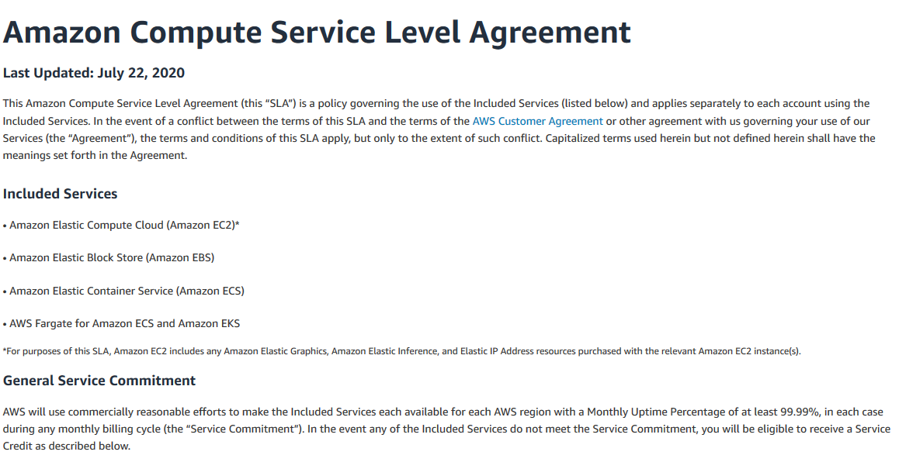
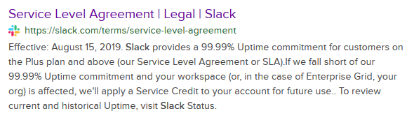
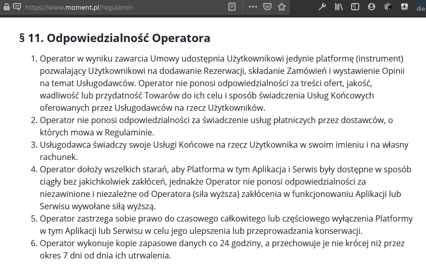

Czy całe IT
jest oparte na niewiedzy?
99.99%
99.99%
99.9%
Buddy - 100%
Ellie Mae - 99.5%
Moment.pl (Versum)
Czy całe IT
jest oparte na niewiedzy?
Michał Wójtowicz
Senior Cloud Developer
Michal Wojtowicz
Redaktor

Czym jest SLA?
- umowa między dostawcą a odbiorcą usługi
- definiuje zakres usługi i jej poziom
- definiuje minimalny czas dostępu (w tzw. cloudzie)
Najczęstsze uproszczenia systemów rozproszonych
1. Sieć jest zawsze online
2. Transfer jest nieograniczony
3. Brak opóźnień
4. Sieć się nie zmienia
5. Sieć jest bezpieczna
© Dilbert.com
uptime.is
99.9%
99.5%
99.0%
Czy mój system się kwalifikuje?
99.93%
99.83%
92.99%
Jak określić SLA swojej aplikacji?
Jak poznać wartość X?
Testy obciążeniowe
- zdefiniuj obciążenie
- sprawdź je
- oblicz procent pomyślnych testów
Czym może być obciążenie?
- liczba jednoczesnych requestów
- obciążenie ilością danych wejściowych per request
- obciążenie złożonością danych wejściowych per request
Czas reakcji na błędy
- czy twój system jest monitorowany 24/7?
- czy twój system zbiera i analizuje metryki?
- jak szybko błąd może być naprawiony w weekend?
- jak szybko błąd może być naprawiony w środku nocy?
Ostatecznie, SLA jest deklarowane
...i utrzymujemy je ku uciesze klientów
Jak zwiększyć SLA?
Design for failure
Design for failure
Komunikacja asynchroniczna
Komunikacja asynchroniczna
Komunikacja asynchroniczna
Komunikacja asynchroniczna
Circuit breaker + fallback
Circuit breaker + fallback
Monitoring
- automatyczny monitoring 24/7
- analiza metryk - systemowych i biznesowych
- automatyczne alarmowanie zespołu
Rozdziel odpowiedzialności aplikacji
- baza danych
- pliki
Rozdziel odpowiedzialności aplikacji
Rozdziel odpowiedzialności aplikacji
Zadbaj o dane
- twórz kopie zapasowe wyprodukowanych danych
- przetestuj przywracanie kopii zapasowych
- zadbaj o nieulotność danych wejściowych
Zadbaj o dane
Stale zwiększaj pokrycie testami automatycznymi
Podsumowanie
1. Design for failure
2. Zbieraj feedback ze swojego systemu
3. Rozdziel odpowiedzialności aplikacji
4. Zadbaj o nieulotność danych
5. Rozwijaj testy automatyczne
Konkurs
Jak nazywamy metodę testowania systemów rozproszonych, która weryfikuje wzorzec "design for failure"?
 /in/wojtowiczmichal
/in/wojtowiczmichal michal@indacloud.pl
michal@indacloud.pl